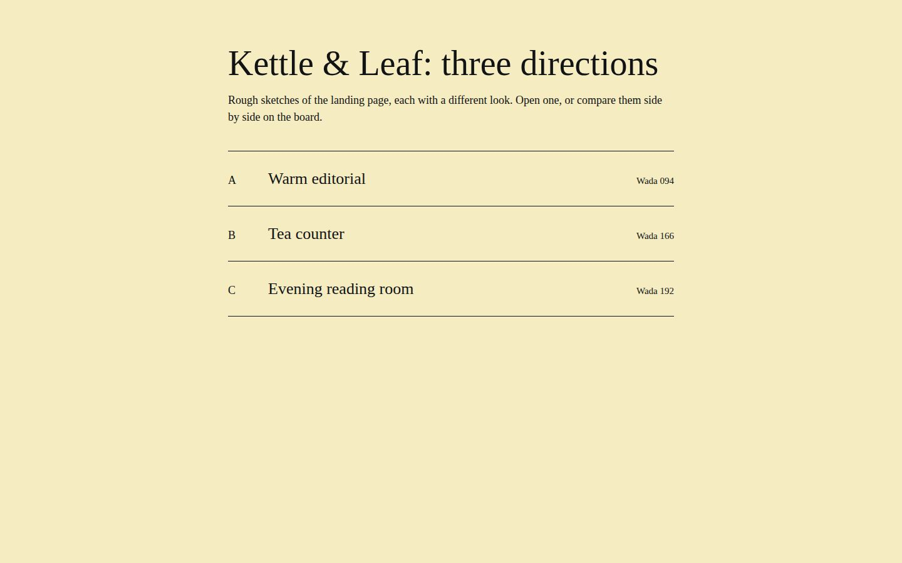
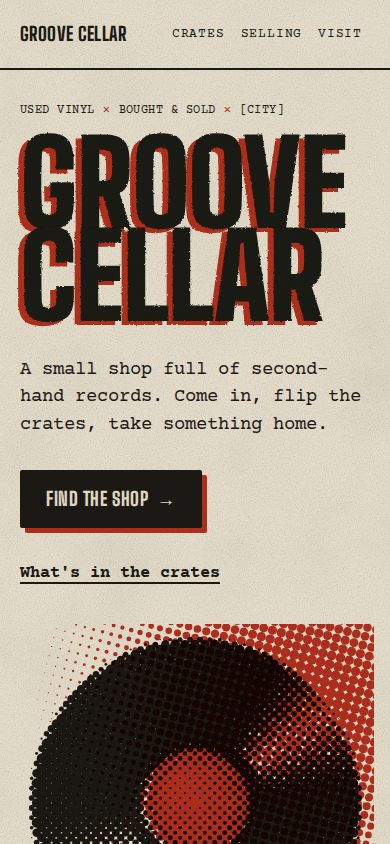

← Projects
Groove Cellar
wada 112 · 3 pages · 2 directions
Page
Board
All widths
1440
390
Comment
Edit
Export
Approve for build
index.html · 1440
2 findings
menu.html · 1440

index.html · 390

● 14 steps · verified clean
Slowed the record to one turn every 6 s and shared the grain with the events page. Two findings remain on index.html.
Ask the agent
Send
 menu.html · 1440
menu.html · 1440